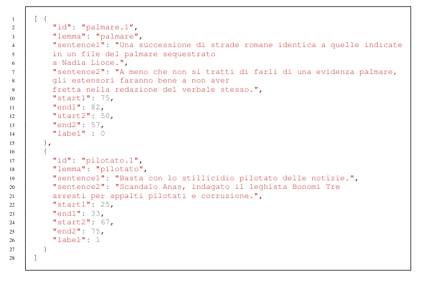

WiC-ITA is the first Word-in-Context task for Italian, organized within Evalita 2023, the 8th evaluation campaign of Natural Language Processing and Speech tools for Italian, which will be held in Parma (Italy) (7th-8th September 2023) - an initiative of the Italian Association for Computational Linguistics (AILC).
The general goal of the WiC-ITA task is to establish if a word w occurring in two different sentences s1 and s2 has the same meaning or not. In particular, our task is composed of two sub-tasks: the binary classification (Sub-task 1) and the ranking (Sub-task 2). More details about the proposed task can be found here. 
Word Sense Disambiguation (WSD) (Bevilacqua et al., 2021) is a Natural Language Processing task with a long history and of extreme interest for all the Computational Linguistics community. In WSD the goal is to disambiguate each word occurrence assigning them the correct sense from a fixed sense inventory, such as WordNet (Miller, 1992). The introduction of contextualized models, such as BERT, allowing the representation of a word in different contexts, steers the research focus to new tasks, such as the Word in Context task (WiC) (Pilehvar and Camacho-Collados, 2019). WSD and the WiC task are highly related: while the former models in an explicit way the relationship between the target word and its sense (taken from a pre-defined sense inventory), the latter reduces it to a binary task. The WiC task requires determining if a word occurring in two different sentences has the same meaning or not. In recent years, there has been a growing interest in the WiC task. This is attested by the creation of several different resources and shared tasks covering more than 20 languages, shown in Table 1.
Generally, the Word in Context task is of broad-scope interest, as it is not limited to specific domains and can be useful for several NLP tasks. Furthermore, the training and the evaluation on a monolingual (Italian) or cross-lingual (English-Italian) dataset is advantageous not only for the models for the Italian language. In fact, the transfer learning ability of WiC models across different languages is proven in previous works (Martelli et al., 2021), where models improve their performance by training in other languages. Several initiatives have been proposed throughout the years: the first one (Pilehvar and Camacho-Collados, 2019) being the proposal of the WiC task, which also came along with a dataset but was limited to English. For this reason, it was followed by the XL-WiC (Raganato et al., 2020) dataset which tried to tackle this issue by taking into account a total of 15 languages. Next the MCL-WiC (Martelli et al., 2021) was the first WiC dataset to introduce the Cross-lingual task. The main motivation behind this particular choice was to cover scenarios where systems have to deal with different languages simultaneously, further highlighting the importance of this task in real-world applications.
With AM2iCo (Liu et al., 2021) the main aim was to focus on languages with lower resources and ensure participating models must consider both the target word and the context to achieve good performances. Finally, in CoSimLex (Armendariz et al., 2020) the task is extended to pairs of words that appear in a shared context and the goal is to determine to which degree they refer to the same concept. This is done to capture polysemy as well as the context-dependency of words.
Shared tasks regarding the WiC usually preserve its binary design, where the two possible outcomes for each entry are: true if the meaning of the target word changes between the two sentences/contexts and false if it does not. However, there can be some cases where it is not so simple to determine the lack or presence of semantic similarity in a discrete way. For this reason, we exploit the 4-point relatedness scale introduced by (Schlechtweg et al., 2018; Brown, 2008) in the annotation process. The scale consists of 4 values, namely 4: Identical; 3: Closely Related; 2: Distantly Related; 1: Unrelated. A fifth value can be assigned (0: Cannot decide) for uncertain cases. Unfortunately, as often happens in the Natural Language Processing research area, some languages are more represented than others, and the WiC task makes no exception in this sense. This issue is evident by analyzing Table 1, where only the XL-WiC dataset (Raganato et al., 2020) contains data for the Italian language. With the WiC-ITA task, we aim to help fill this gap in the literature, making openly available a resource that can undoubtedly foster novel research.
Carlos Santos Armendariz, Matthew Purver, Matej Ulcar, Senja Pollak, Nikola Ljubesic, and Mark Granroth Wilding. 2020. CoSimLex: A Resource for Evaluating Graded Word Similarity in Context. In Nicoletta Calzolari, Frederic Bechet, Philippe Blache, Khalid Choukri, Christopher Cieri, Thierry Declerck, Sara Goggi, Hitoshi Isahara, Bente Maegaard, Joseph Mariani, Helene Mazo, Asuncion Moreno, Jan Odijk, and Stelios Piperidis, editors, Proceedings of The 12th Language Resources and Evaluation Conference, LREC 2020, Marseille, France, May 11-16, 2020, pages 5878–5886. European Language Resources Association.
Michele Bevilacqua, Tommaso Pasini, Alessandro Raganato, and Roberto Navigli. 2021. Recent Trends in Word Sense Disambiguation: A Survey. In Zhi-Hua Zhou, editor, Proceedings of the Thirtieth International Joint Conference on Artificial Intelligence, IJCAI 2021, Virtual Event / Montreal, Canada, 19-27 August 2021, pages 4330–4338. ijcai.org.
Susan Windisch Brown. 2008. Choosing sense distinctions for WSD: psycholinguistic evidence. In ACL 2008, Proceedings of the 46th Annual Meeting of the Association for Computational Linguistics, June 15-20, 2008, Columbus, Ohio, USA, Short Papers, pages 249–252. The Association for Computer Linguistics.
Qianchu Liu, Edoardo Maria Ponti, Diana McCarthy, Ivan Vulic, and Anna Korhonen. 2021. AM2iCo: Evaluating Word Meaning in Context across Low-Resource Languages with Adversarial Examples. In Marie-Francine Moens, Xuanjing Huang, Lucia Specia, and Scott Wen-tau Yih, editors, Proceedings of the 2021 Conference on Empirical Methods in Natural Language Processing, EMNLP 2021, Virtual Event / Punta Cana, Dominican Republic, 7-11 November, 2021, pages 7151–7162. Association for Computational Linguistics.
Federico Martelli, Najla Kalach, Gabriele Tola, and Roberto Navigli. 2021. SemEval-2021 Task 2: Multilingual and Cross-lingual Word-in-Context Disambiguation (MCL-WiC). In Alexis Palmer, Nathan Schneider, Natalie Schluter, Guy Emerson, Aurelie Herbelot, and Xiaodan Zhu, editors, Proceedings of the 15th International Workshop on Semantic Evaluation, SemEval@ACL/IJCNLP 2021, Virtual Event / Bangkok, Thailand, August 5-6, 2021, pages 24–36. Association for Computational Linguistics.
George A. Miller. 1992. WORDNET: a lexical database for english. In Speech and Natural Language: Proceedings of a Workshop Held at Harriman, New York, USA, February 23-26, 1992. Morgan Kaufmann.
Mohammad Taher Pilehvar and Jose Camacho-Collados. 2019. WiC: the Word-in-Context Dataset for Evaluating Context-Sensitive Meaning Representations. In Jill Burstein, Christy Doran, and Thamar Solorio, editors, Proceedings of the 2019 Conference of the North American Chapter of the Association for Computational Linguistics: Human Language Technologies, NAACL-HLT 2019, Minneapolis, MN, USA, June 2-7, 2019, Volume 1 (Long and Short Papers), pages 1267–1273. Association for Computational Linguistics.
Alessandro Raganato, Tommaso Pasini, Jose Camacho-Collados, and Mohammad Taher Pilehvar. 2020. XL-WiC: A Multilingual Benchmark for Evaluating Semantic Contextualization. In Bonnie Webber, Trevor Cohn, Yula He, and Yang Liu, editors, Proceedings of the 2020 Conference on Empirical Methods in Natural Language Processing, EMNLP 2020, Online, November 16-20, 2020, pages 7193–7206. Association for Computational Linguistics.
Dominik Schlechtweg, Sabine Schulte im Walde, and Stefanie Eckmann. 2018. Diachronic Usage Relatedness (DURel): A Framework for the Annotation of Lexical Semantic Change. In Marilyn A. Walker, Heng Ji, and Amanda Stent, editors, Proceedings of the 2018 Conference of the North American Chapter of the Association for Computational Linguistics: Human Language Technologies, NAACL-HLT, New Orleans, Louisiana, USA, June 1-6, 2018, Volume 2 (Short Papers), pages 169–174. Association for Computational Linguistics.